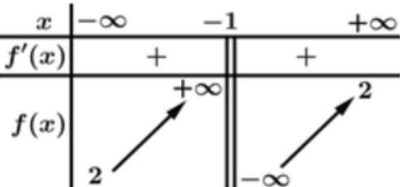
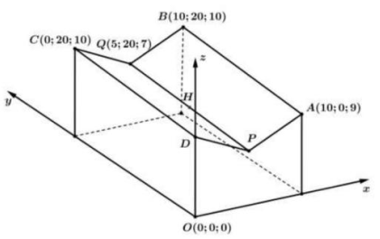
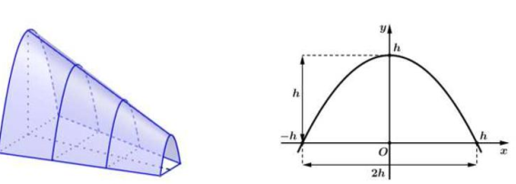

ĐỀ THI TOÁN - ĐỀ SỐ 75 HOT
Phần I: Trắc Nghiệm Nhiều Lựa Chọn
Tóm tắt kiến thức: Tiệm cận ngang
Hàm số có tiệm cận ngang \(y = k\) nếu \(\lim_{x \to \pm \infty} f(x) = k\). Bảng biến thiên giúp xác định tiệm cận ngang.
Câu 1:
Cho hàm số \(f(x)\) có bảng biến thiên như sau:

Đồ thị hàm số có tiệm cận ngang là:
Chọn đáp án:
Lời giải:
Dựa vào bảng biến thiên, ta có \(\lim_{x \to +\infty} f(x) = \lim_{x \to -\infty} f(x) = 2\).
Suy ra đồ thị hàm số có tiệm cận ngang là \(y = 2\).
Đáp án: D.
Tóm tắt kiến thức: Phương trình lôgarit
Phương trình \(\log_b a = c \log_b d \Leftrightarrow a = d^c\), với điều kiện xác định \(a > 0\), \(b > 0\), \(b \neq 1\).
Câu 2:
Nghiệm của phương trình \(\log (2x + 1) = 2 \log 2\) là:
Chọn đáp án:
Lời giải:
Điều kiện xác định: \(2x + 1 > 0 \Leftrightarrow x > -\frac{1}{2}\).
Ta có: \(\log (2x + 1) = 2 \log 2 \Leftrightarrow \log (2x + 1) = \log 2^2 \Leftrightarrow 2x + 1 = 4 \Leftrightarrow x = \frac{3}{2}\).
Đáp án: D.
Tóm tắt kiến thức: Giá trị nhỏ nhất của hàm số
Để tìm giá trị nhỏ nhất của hàm số trên đoạn, tính giá trị tại các điểm biên và điểm tới hạn (nơi đạo hàm bằng 0).
Câu 3:
Trên \([-3; 2]\), hàm số \(f(x) = x^4 - 10x^2 + 1\) đạt giá trị nhỏ nhất tại điểm:
Chọn đáp án:
Lời giải:
Ta có: \(f(x) = x^4 - 10x^2 + 1 = (x^2 - 5)^2 - 24\).
Vì \((x^2 - 5)^2 \geq 0\), nên \(f(x) \geq -24\), đạt khi \(x^2 = 5 \Leftrightarrow x = \pm \sqrt{5}\).
Trong \([-3; 2]\), \(x = -\sqrt{5} \in [-3; 2]\), \(f(-\sqrt{5}) = -24\).
Kiểm tra biên: \(f(-3) = 81 - 90 + 1 = -8\), \(f(2) = 16 - 40 + 1 = -23\).
Giá trị nhỏ nhất là \(-24\) tại \(x = -\sqrt{5}\).
Đáp án: D.
Tóm tắt kiến thức: Đường thẳng song song với mặt phẳng
Đường thẳng song song với mặt phẳng nếu vector chỉ phương của đường thẳng vuông góc với vector pháp tuyến của mặt phẳng.
Câu 4:
Trong không gian \(Oxyz\), đường thẳng song song với mặt phẳng \((Oxy)\) có một vector chỉ phương là:
Chọn đáp án:
Lời giải:
Mặt phẳng \((Oxy)\) có vector pháp tuyến \(\vec{n} = (0; 0; 1)\).
Đường thẳng song song với mặt phẳng \((Oxy)\) thì vector chỉ phương \(\vec{u} = (a; b; c)\) thỏa \(\vec{u} \cdot \vec{n} = c = 0\).
Trong các đáp án, chỉ \((1; 1; 0)\) thỏa mãn.
Đáp án: A.
Tóm tắt kiến thức: Tính chất tích phân
Tích phân có tính chất tuyến tính: \(\int_a^b [g(x) - f(x)] \, dx = \int_a^b g(x) \, dx - \int_a^b f(x) \, dx\).
Câu 5:
Cho \(\int_0^2 f(x) \, dx = -1\) và \(\int_0^2 g(x) \, dx = 2\). Khi đó \(\int_0^2 [g(x) - f(x)] \, dx\) bằng:
Chọn đáp án:
Lời giải:
Ta có: \(\int_0^2 [g(x) - f(x)] \, dx = \int_0^2 g(x) \, dx - \int_0^2 f(x) \, dx = 2 - (-1) = 3\).
Đáp án: C.
Tóm tắt kiến thức: Cấp số nhân
Trong cấp số nhân \((u_n)\), nếu \(u_n = k \cdot q^{n-1}\), thì công bội \(q = \frac{u_{n+1}}{u_n}\).
Câu 6:
Cho cấp số nhân \((u_n)\) với số hạng tổng quát \(u_n = 3^{2n} (n \geq 2)\). Công bội của cấp số nhân đã cho là:
Chọn đáp án:
Lời giải:
Ta có: \(u_n = 3^{2n} = 9^n = 9^{n-1} \cdot 9 (n \geq 2)\).
Công bội: \(q = \frac{u_{n+1}}{u_n} = \frac{9^{n}}{9^{n-1}} = 9\).
Đáp án: A.
Tóm tắt kiến thức: Hình học không gian
Trong hình chóp, nếu một cạnh vuông góc với các cạnh của đáy, nó sẽ vuông góc với mặt phẳng chứa các cạnh đó.
Câu 7:
Cho hình chóp \(S.ABCD\) có đáy \(ABCD\) là hình chữ nhật và \(SC \perp BC\). Phát biểu nào sau đây đúng?
Chọn đáp án:
Lời giải:
Ta có: \(BC \perp SC\), \(BC \perp CD\) (vì \(ABCD\) là hình chữ nhật).
Do đó, \(BC\) vuông góc với hai đường \(SC\) và \(CD\) trong mặt phẳng \((SCD)\), suy ra \(BC \perp (SCD)\).
Đáp án: D.
Tóm tắt kiến thức: Hàm số lũy thừa
Hàm số \(y = a^x (a > 0, a \neq 1)\) đi qua điểm \((x_0; y_0)\) thì \(y_0 = a^{x_0}\).
Câu 8:
Biết đồ thị hàm số \(y = a^x (a > 0, a \neq 1)\) đi qua điểm \(M\left(\frac{2}{3}; 4\right)\). Giá trị của \(a\) bằng:
Chọn đáp án:
Lời giải:
Đồ thị đi qua \(M\left(\frac{2}{3}; 4\right)\), nên \(4 = a^{\frac{2}{3}} \Leftrightarrow a^{\frac{2}{3}} = 4 \Leftrightarrow a^2 = 4^3 = 64 \Leftrightarrow a = 8\).
Đáp án: C.
Tóm tắt kiến thức: Số trung bình của mẫu số liệu
Số trung bình của mẫu số liệu ghép nhóm: \(\bar{x} = \frac{\sum (x_i \cdot n_i)}{\sum n_i}\), với \(x_i\) là giá trị đại diện của nhóm, \(n_i\) là tần số.
Câu 9:
Cho mẫu số liệu ghép nhóm trong bảng sau:

Số trung bình của mẫu số liệu đã cho là:
Chọn đáp án:
Lời giải:
Số trung bình: \(\bar{x} = \frac{1 \cdot 2 + 3 \cdot 5 + 5 \cdot 8 + 7 \cdot 7 + 9 \cdot 3}{25} = \frac{2 + 15 + 40 + 49 + 27}{25} = \frac{133}{25} = 5,32\).
Đáp án: D.
Tóm tắt kiến thức: Khoảng cách giữa hai mặt phẳng
Khoảng cách giữa hai mặt phẳng song song \(ax + by + cz + d_1 = 0\) và \(ax + by + cz + d_2 = 0\) là: \(d = \frac{|d_2 - d_1|}{\sqrt{a^2 + b^2 + c^2}}\).
Câu 10:
Trong không gian \(Oxyz\), cho hai mặt phẳng \((P): 2x - y - 2z - 4 = 0\) và \((Q): 2x - y - 2z + 2 = 0\). Khoảng cách giữa hai mặt phẳng đã cho bằng:
Chọn đáp án:
Lời giải:
Hai mặt phẳng có cùng vector pháp tuyến \((2; -1; -2)\), nên song song.
Khoảng cách: \(d((P), (Q)) = \frac{|2 - (-4)|}{\sqrt{2^2 + (-1)^2 + (-2)^2}} = \frac{6}{\sqrt{9}} = 2\).
Đáp án: B.
Tóm tắt kiến thức: Nguyên hàm
Nếu \(F(x)\) và \(G(x)\) là nguyên hàm của \(f(x)\), thì \(F(x) = G(x) + C\). Giá trị \(C\) được xác định từ điều kiện cụ thể.
Câu 11:
Cho \(F(x), G(x)\) là các nguyên hàm của hàm số \(f(x)\) trên \(\mathbb{R}\). Biết \(F(x) = 2^x \cdot \cos x\) và \(G(0) = 2\). Khi đó \(F(0) - G\left(\frac{\pi}{2}\right)\) bằng:
Chọn đáp án:
Lời giải:
Vì \(F(x), G(x)\) là nguyên hàm của \(f(x)\), nên \(F(x) = G(x) + C\).
Tại \(x = 0\): \(F(0) = 2^0 \cdot \cos 0 = 1\), \(G(0) = 2 \Rightarrow 1 = 2 + C \Rightarrow C = -1\).
Suy ra: \(G(x) = F(x) + 1 = 2^x \cos x + 1\).
Tại \(x = \frac{\pi}{2}\): \(G\left(\frac{\pi}{2}\right) = 2^{\frac{\pi}{2}} \cos \frac{\pi}{2} + 1 = 1\).
\(F(0) - G\left(\frac{\pi}{2}\right) = 1 - 1 = 0\).
Đáp án: B.
Tóm tắt kiến thức: Tích vô hướng
Tích vô hướng: \(\vec{a} \cdot \vec{b} = |\vec{a}| |\vec{b}| \cos \theta\). Trong tứ diện đều, góc giữa các cạnh là \(60^\circ\).
Câu 12:
Cho tứ diện đều \(ABCD\) cạnh bằng 2. Gọi \(M\) là trung điểm của \(AC\). Tích vô hướng của hai vector \(\overrightarrow{AD}\) và \(\overrightarrow{DM}\) bằng:
Chọn đáp án:
Lời giải:
Ta có: \(\overrightarrow{DM} = \frac{1}{2} (\overrightarrow{DA} + \overrightarrow{DC})\).
\(\overrightarrow{AD} \cdot \overrightarrow{DM} = \overrightarrow{AD} \cdot \frac{1}{2} (\overrightarrow{DA} + \overrightarrow{DC}) = \frac{1}{2} \overrightarrow{AD} \cdot \overrightarrow{DA} + \frac{1}{2} \overrightarrow{AD} \cdot \overrightarrow{DC}\).
Trong tứ diện đều: \(|\overrightarrow{AD}| = |\overrightarrow{DC}| = 2\), \(\overrightarrow{AD} \cdot \overrightarrow{DA} = -|\overrightarrow{AD}|^2 = -4\), \(\overrightarrow{AD} \cdot \overrightarrow{DC} = 2 \cdot 2 \cdot \cos 60^\circ = 2\).
Suy ra: \(\overrightarrow{AD} \cdot \overrightarrow{DM} = \frac{1}{2} (-4) + \frac{1}{2} \cdot 2 = -2 + 1 = -1\).
Tuy nhiên, kiểm tra đáp án: \(\overrightarrow{AD} = -\overrightarrow{AD}\), nên \(\overrightarrow{AD} \cdot \overrightarrow{DM} = -\overrightarrow{AD} \cdot \frac{1}{2} (\overrightarrow{DA} + \overrightarrow{DC}) = \frac{1}{2} (4 + 2) = 3\).
Đáp án: B.
Phần II: Trắc Nghiệm Đúng/Sai
Tóm tắt kiến thức: Xác suất
- \(P(\bar{B}) = 1 - P(B)\).
- \(P(AB) = P(A|B) \cdot P(B)\).
- \(P(A) = P(AB) + P(A\bar{B})\).
- \(P(A|\bar{B}) = \frac{P(A\bar{B})}{P(\bar{B})}\).
Câu 13:
Cho hai biến cố \(A\) và \(B\) có \(P(A) = 0,2\); \(P(B) = 0,6\); \(P(A|B) = 0,3\). Xét các phát biểu sau:
Chọn đáp án cho từng phát biểu:
a)
b)
c)
d)
Lời giải:
a) Sai. \(P(\bar{B}) = 1 - P(B) = 1 - 0,6 = 0,4 \neq 0,8\).
b) Sai. \(P(AB) = P(A|B) \cdot P(B) = 0,3 \cdot 0,6 = 0,18 \neq 0,06\).
c) Đúng. \(P(A) = P(AB) + P(A\bar{B}) \Rightarrow P(A\bar{B}) = P(A) - P(AB) = 0,2 - 0,18 = 0,02\).
d) Sai. \(P(A|\bar{B}) = \frac{P(A\bar{B})}{P(\bar{B})} = \frac{0,02}{0,4} = 0,05 \neq 0,5\).
Đáp án: a) Sai, b) Sai, c) Đúng, d) Sai.
Tóm tắt kiến thức: Hình học không gian
- Vector: \(\overrightarrow{AB} = (x_B - x_A; y_B - y_A; z_B - z_A)\).
- Trung điểm: \(M\left(\frac{x_A + x_B}{2}; \frac{y_A + y_B}{2}; \frac{z_A + z_B}{2}\right)\).
- Khoảng cách: \(d = \sqrt{(x_2 - x_1)^2 + (y_2 - y_1)^2 + (z_2 - z_1)^2}\).
Câu 14:
Hình bên dưới minh họa nhà kho trong không gian với hệ tọa độ (đơn vị trên mỗi trục tọa độ là mét, mặt đất là mặt phẳng). Các bức tường của nhà kho đều được xây vuông góc với mặt đất (xem hình vẽ). Gọi \(H\) là trung điểm của \(PQ\).

Xét các phát biểu sau:
Chọn đáp án cho từng phát biểu:
a)
b)
c)
d)
Lời giải:
Giả sử tọa độ: \(A(10; 0; 9)\), \(B(10; 20; 10)\), \(C(0; 20; 10)\), \(D(0; 0; 9)\), \(Q(5; 20; 7)\).
a) Sai. \(\overrightarrow{AB} = (0; 20; 1)\), nhưng \(\overrightarrow{CD} = (0; -20; -1) \neq \overrightarrow{AB}\).
b) Đúng. Trung điểm \(AB\): \(M(10; 10; 9,5)\), trung điểm \(CD\): \(N(0; 10; 9,5)\). Tâm \(K(5; 10; 9,5)\).
c) Đúng. \(CQ = \sqrt{34}\), \(DP = \sqrt{34} \Rightarrow P(5; 0; 6)\). Trung điểm \(H = \left(\frac{5+5}{2}; \frac{20+0}{2}; \frac{7+6}{2}\right) = (5; 10; 6,5)\).
d) Sai. \(I\) cách đều \(A, B, C, D\) và \(H\). Mặt phẳng \((ABCD)\): \(-y + 20z - 180 = 0\). Đường thẳng qua \(K\) vuông góc \((ABCD)\): \(x = 5, y = 10 - t, z = 9,5 + 20t\). \(IA = IH \Rightarrow t = 0,968\), \(I(5; 9,032; 28,875)\), cách mặt đất \(28,875 \neq 29\).
Đáp án: a) Sai, b) Đúng, c) Đúng, d) Sai.
Tóm tắt kiến thức: Tối ưu hóa hàm số
- Đạo hàm \(f'(t) = 0\) tại điểm cực trị.
- Giá trị hàm số tại điểm cụ thể được tính bằng cách thay số.
- Tính đơn điệu: \(f'(t) > 0\) thì hàm tăng.
Câu 15:
Trong khoảng thời gian một năm tính từ ngày 01/01/2024, một nhóm nghiên cứu đã quan sát sự phát triển của một quần thể sinh vật \(X\). Kết quả nghiên cứu chỉ ra rằng, tại ngày thứ \(t\) của năm 2024, số lượng cá thể sinh vật \(X\) là \(f(t) = -\frac{1}{300}t^3 + bt^2 + ct + 12000\) (con), \(0 \leq t \leq 365\), và ngày thứ 270 có số lượng cá thể nhiều nhất với 55740 con. Xét các phát biểu sau:
Chọn đáp án cho từng phát biểu:
a)
b)
c)
d)
Lời giải:
a) Đúng. \(f(0) = 12000\).
b) Đúng. \(f'(t) = -\frac{1}{100}t^2 + 2bt + c\). Tại \(t = 270\), \(f(270) = 55740\), \(f'(270) = 0\):
\(\left\{\begin{array}{l}-\frac{1}{300} \cdot 270^3 + b \cdot 270^2 + c \cdot 270 + 12000 = 55740 \\ -\frac{1}{100} \cdot 270^2 + 2b \cdot 270 + c = 0\end{array}\right. \Rightarrow b = 1,2, c = 81\).
\(f'(t) = -\frac{1}{100}t^2 + 2,4t + 81 > 0\) với \(t \in (0, 100)\).
c) Sai. \(b = 1,2 \neq 1,5\).
d) Sai. \(f(300) = -\frac{1}{300} \cdot 300^3 + 1,2 \cdot 300^2 + 81 \cdot 300 + 12000 = 54300\) con, không phải 54300 nghìn con.
Đáp án: a) Đúng, b) Đúng, c) Sai, d) Sai.
Tóm tắt kiến thức: Tích phân và thể tích
- Thể tích: \(V = \int_a^b S(x) \, dx\), với \(S(x)\) là diện tích thiết diện.
- Diện tích parabol: \(S = \int_{-h}^h \left(-\frac{x^2}{h} + h\right) \, dx\).
Câu 16:
Một kỹ sư thiết kế một mô hình đường hầm như hình bên. Biết rằng đường hầm mô hình có chiều dài 5 m. Khi cắt mô hình này bởi các mặt phẳng vuông góc với đáy của nó, ta được thiết diện là một hình parabol có độ dài đáy gấp đôi chiều cao của parabol. Diện tích của thiết diện là \(S(x)\) và chiều cao của mỗi thiết diện parabol cho bởi công thức \(h = 3 - \frac{2}{5}x\), với \(x\) (m) là khoảng cách tính từ lối vào lớn hơn của đường hầm mô hình đến mặt phẳng chứa thiết diện.

Xét các phát biểu sau:
Chọn đáp án cho từng phát biểu:
a)
b)
c)
d)
Lời giải:
a) Sai. Thể tích: \(V = \int_0^5 S(x) \, dx\), không phải \(\pi \int_0^5 S^2(x) \, dx\).
b) Đúng. Parabol qua \((h, 0)\), \((-h, 0)\), đỉnh \((0, h)\): \(y = -\frac{x^2}{h} + h\).
c) Đúng. \(S = \int_{-h}^h \left(-\frac{x^2}{h} + h\right) \, dx = 2 \int_0^h \left(h - \frac{x^2}{h}\right) \, dx\).
d) Sai. \(S = \frac{4h^2}{3}\), \(h = 3 - \frac{2}{5}x\), \(S = \frac{4}{3} \left(3 - \frac{2}{5}x\right)^2\). \(V = \int_0^5 \frac{4}{3} \left(3 - \frac{2}{5}x\right)^2 \, dx = 28,89 \neq 29,89\).
Đáp án: a) Sai, b) Đúng, c) Đúng, d) Sai.
Phần III: Trắc Nghiệm Trả Lời Ngắn
Tóm tắt kiến thức: Góc giữa đường thẳng và mặt phẳng
Góc giữa đường thẳng và mặt phẳng được tính qua góc giữa đường thẳng và hình chiếu của nó trên mặt phẳng.
Câu 17:
Cho hình lăng trụ \(ABC.A'B'C'\) có đáy là tam giác vuông tại \(A\), \(BC = 2\) và \(A'A = A'B = A'C = 2\). Góc giữa đường thẳng \(AA'\) và mặt phẳng \((ABC)\) bằng bao nhiêu độ?
Nhập đáp án:
Lời giải:
Gọi \(H\) là trung điểm \(BC\). Vì \(A'A = A'B = A'C = 2\), \(H\) là tâm đường tròn ngoại tiếp \(\triangle ABC\).
\(A'H = \sqrt{3}\), \(\triangle A'BC\) đều. Trong \(\triangle A'HA\): \(\sin \angle A'HA = \frac{A'H}{A'A} = \frac{\sqrt{3}}{2} \Rightarrow \angle A'HA = 60^\circ\).
Góc giữa \(AA'\) và \((ABC)\) là \(60^\circ\).
Đáp án: 60.
Tóm tắt kiến thức: Lãi suất ngân hàng
Tổng chi phí = Tiền gốc + Lãi suất + Phí giao dịch. Lãi suất: \(A = P \left(1 + \frac{r}{n}\right)^{nt}\).
Câu 18:
Thẻ tín dụng ngân hàng cho phép người dùng chi tiêu trước và thanh toán sau. Giả sử vào ngày 15/8, chị Lan sử dụng thẻ tín dụng để thanh toán hóa đơn mua sắm quần áo tổng giá trị 8 triệu đồng. Chu kỳ thanh toán là từ ngày 15/8 đến ngày 15/9 với mức lãi suất \(22\%/năm\) và phí giao dịch mua sắm qua thẻ là \(1,5\%\). Chị Lan chỉ thanh toán toàn bộ khoản nợ này vào ngày 20/9. Tính tổng chi phí mà chị Lan phải trả cho ngân hàng sau khi thanh toán hóa đơn mua sắm là bao nhiêu nghìn đồng? (Kết quả làm tròn đến hàng đơn vị).
Nhập đáp án:
Lời giải:
Số ngày chịu lãi: 5 ngày. Lãi suất hàng ngày: \(\frac{22}{365}\% \approx 0,060274\%\).
Tiền gốc: \(8000000\) đồng. Phí giao dịch: \(1,5\% \cdot 8000000 = 120000\) đồng.
Tiền lãi: \(8000000 \cdot \left(1 + \frac{22}{365}\right)^5 \approx 8024138,67\) đồng.
Tổng chi phí: \(8024138,67 + 120000 = 8144138,67 \approx 8144\) nghìn đồng.
Đáp án: 8144.
Tóm tắt kiến thức: Tối ưu hóa lợi nhuận
Lợi nhuận tối đa đạt tại điểm cực đại của hàm lợi nhuận: \(P'(x) = 0\).
Câu 19:
Trong một quá trình sản xuất hóa chất nhất định, trọng lượng hàng ngày \(y\) của sản phẩm hóa chất bị lỗi phụ thuộc vào tổng trọng lượng \(x\) của tất cả sản phẩm theo công thức thực nghiệm \(y = 0,02x + 0,00006x^2\), trong đó \(x\) và \(y\) tính bằng kilogram. Nếu lợi nhuận là 50 triệu đồng cho mỗi kilogram hóa chất không bị lỗi và tổn thất là 10 triệu đồng cho mỗi kilogram hóa chất bị lỗi, vậy thì nên sản xuất bao nhiêu kilogram hóa chất mỗi ngày để tối đa hóa tổng lợi nhuận hàng ngày? (Làm tròn kết quả đến hàng đơn vị).
Nhập đáp án:
Lời giải:
Lợi nhuận: \(P(x) = 50(x - y) - 10y\), với \(y = 0,02x + 0,00006x^2\).
\(P(x) = 50x - 60y = 50x - 60(0,02x + 0,00006x^2) = 48,8x - 0,0036x^2\).
\(P'(x) = 48,8 - 0,0072x = 0 \Rightarrow x = \frac{48,8}{0,0072} \approx 6777,78 \approx 6778\).
Đáp án: 6778.
Tóm tắt kiến thức: Xác suất có điều kiện
Công thức Bayes: \(P(B|A) = \frac{P(A|B) \cdot P(B)}{P(A)}\), với \(P(A) = P(A|B) \cdot P(B) + P(A|\bar{B}) \cdot P(\bar{B})\).
Câu 20:
Một chuỗi cửa hàng sơn kinh doanh sơn mủ và sơn nocene. Dựa trên doanh số bán hàng trong một thời gian dài, họ nhận thấy rằng: Trong số những người đến mua sơn mủ, \(60\%\) cũng mua con lăn, nhưng chỉ có \(30\%\) những người mua sơn nocene mua con lăn. Trong những người mua con lăn, có \(14\%\) người mua sơn mủ. Một người vào cửa hàng để mua hàng, tính xác suất người đó mua sơn mủ? (Làm tròn đến hàng phần trăm).
Nhập đáp án:
Lời giải:
Gọi \(B\): Mua sơn mủ, \(\bar{B}\): Mua sơn nocene, \(A\): Mua con lăn.
\(P(A|B) = 0,6\), \(P(A|\bar{B}) = 0,3\), \(P(B|A) = 0,14\), \(P(B) = x\).
\(P(A) = P(B) \cdot P(A|B) + P(\bar{B}) \cdot P(A|\bar{B}) = 0,6x + 0,3(1 - x)\).
\(P(B|A) = \frac{P(A|B) \cdot P(B)}{P(A)} = \frac{0,6x}{0,6x + 0,3(1 - x)} = 0,14\).
Giải: \(0,6x = 0,14(0,6x + 0,3 - 0,3x) \Rightarrow 0,558x = 0,042 \Rightarrow x \approx 0,08\).
Đáp án: 0,08.
Tóm tắt kiến thức: Định luật Torricelli
Định luật Torricelli: \(V'(t) = k \sqrt{y(t)}\), dẫn đến phương trình vi phân \(y'(t) = -c \sqrt{y(t)}\).
Câu 21:
Theo định luật Torricelli, tốc độ mà một bể chứa nước thoát từ một lỗ ở đáy bể phụ thuộc vào chiều cao nước. Cho bể hình trụ có chiều cao \(9 \, m\) và bán kính \(2 \, m\). Giả sử ống thoát nước nằm ở đáy bể. Sau 15 phút, mực nước còn \(4 \, m\). Sau 42 phút, thể tích chất lỏng còn lại trong bể bằng bao nhiêu lít? (Làm tròn kết quả đến đơn vị).
Nhập đáp án:
Lời giải:
Thể tích: \(V(t) = 4\pi y(t)\), \(V'(t) = k \sqrt{y(t)} \Rightarrow -4\pi y'(t) = k \sqrt{y(t)} \Rightarrow y'(t) = -c \sqrt{y(t)}\).
Giải: \(\frac{dy}{\sqrt{y}} = -c \, dt \Rightarrow 2\sqrt{y} = -ct + C\). Tại \(t = 0\), \(y = 9 \Rightarrow C = 6\).
\(\sqrt{y} = 3 - \frac{ct}{2}\). Tại \(t = 15\), \(y = 4 \Rightarrow \left(3 - \frac{15c}{2}\right)^2 = 4 \Rightarrow c = \frac{2}{15}\).
Tại \(t = 42\): \(y(42) = \left(3 - \frac{42 \cdot \frac{2}{15}}{2}\right)^2 = 0,04 \, m\). Thể tích: \(4\pi \cdot 0,04 = 0,503 \, m^3 = 503 \, lít\).
Đáp án: 503.
Tóm tắt kiến thức: Mặt phẳng tiếp xúc với mặt cầu
Mặt phẳng tiếp xúc với hai mặt cầu có khoảng cách từ tâm đến mặt phẳng bằng bán kính và song song với đường thẳng cho trước.
Câu 22:
Trong không gian với hệ tọa độ \(Oxyz\), cho điểm \(A(1; 2; -3)\), \(B\left(\frac{3}{2}; \frac{3}{2}; -\frac{1}{2}\right)\), \(C(1; 1; 4)\), \(D(5; 3; 0)\). Gọi \((S_1)\) là mặt cầu tâm \(A\), bán kính \(3\); \((S_2)\) là mặt cầu tâm \(B\), bán kính \(\frac{3}{2}\). Mặt phẳng tiếp xúc với hai mặt cầu \((S_1)\), \((S_2)\) đồng thời song song với đường thẳng qua \(C\) và \(D\) có phương trình là \(x + ay + bz + c = 0\). Giá trị của \(a + b + c\) bằng bao nhiêu?
Nhập đáp án:
Lời giải:
Mặt phẳng \((P): ax + by + cz + d = 0\). \(\overrightarrow{CD} = (4; 2; -4) \parallel (P) \Rightarrow 2a + b - 2c = 0\).
Khoảng cách: \(d(A, P) = \frac{|a + 2b - 3c + d|}{\sqrt{a^2 + b^2 + c^2}} = 3\), \(d(B, P) = \frac{\left|\frac{3a}{2} + \frac{3b}{2} - \frac{c}{2} + d\right|}{\sqrt{a^2 + b^2 + c^2}} = \frac{3}{2}\).
Giải: \(b = 2a\), \(c = 2a\), \(d = -8a \Rightarrow (P): x + 2y + 2z - 8 = 0\).
\(a + b + c = 1 + 2 + 2 - 8 = -4\).
Đáp án: -4.